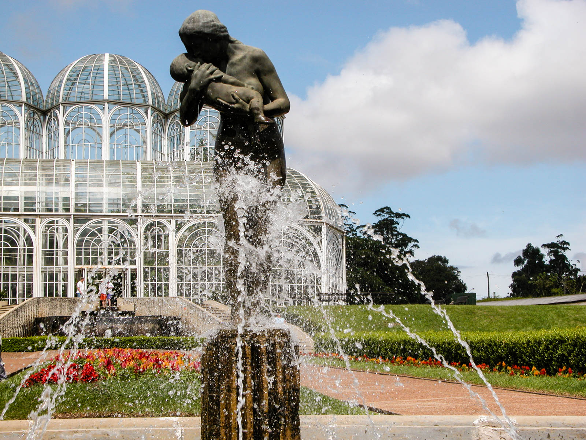
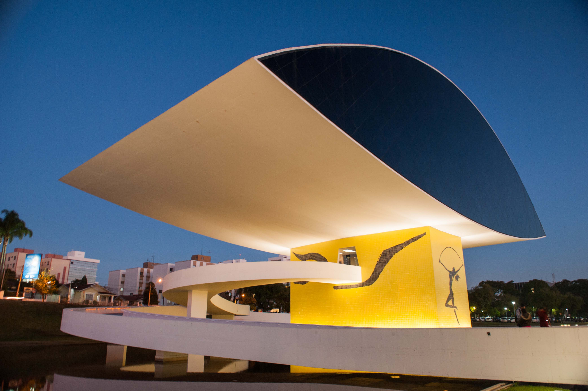

Jardim Bôtanbico
O residencial Jardim Botânico se espalha pelo Jardim Botânico de Curitiba, com uma estufa tropical de 3 cúpulas, uma área arborizada com trilhas e um jardim sensorial. O time de futebol local do Paraná Clube joga no Estádio Vila Capanema. Bares descontraídos que servem lanches locais são lotados por estudantes da Universidade Federal do Paraná, enquanto restaurantes italianos e lanchonetes estão espalhados pela Av. Prefeito Omar Sabbag.
Museu Oscar Niemeyer
Salvador abriga famosos pontos turísticos da Bahia, entre eles o Elevador Lacerda, por exemplo. Inaugurado em 1873, o elevador mede 72 metros de altura e tem capacidade para mais de 100 pessoas. Sendo o foi o primeiro do mundo a servir de transporte público, ele liga a Praça Tomé de Sousa, na Cidade Alta, à Praça Cayru, no bairro do Comércio, a Cidade Baixa.